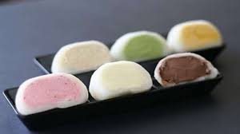
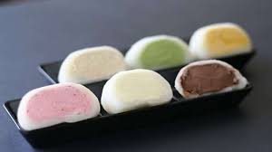

Apa itu Mochi?
Mochi adalah kue tradisional Jepang yang terbuat dari tepung ketan, memiliki tekstur kenyal dan biasanya berisi pasta kacang merah atau varian rasa lainnya.

Mochi adalah kue tradisional Jepang yang terbuat dari tepung ketan, memiliki tekstur kenyal dan biasanya berisi pasta kacang merah atau varian rasa lainnya.
